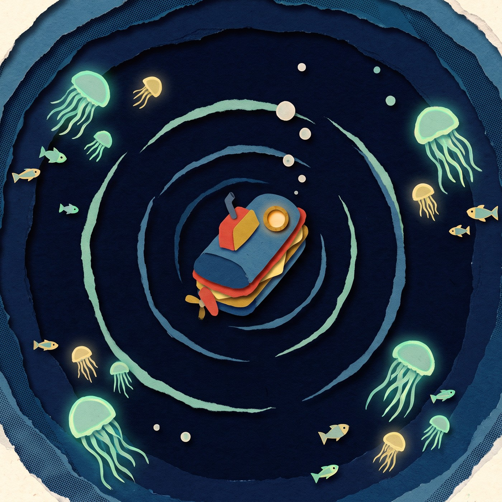

DESCENT LOG
SONAR
DEPTH
0200
m
0860
m
1860
m
PRESSURE ................ OK
HULL TEMP ................ 2°C
CREW ..................... 1
MORALE ................... HIGH
No signal
Deeper
ATLANTIC TRENCH · 1,860 M · NO SUNLIGHT